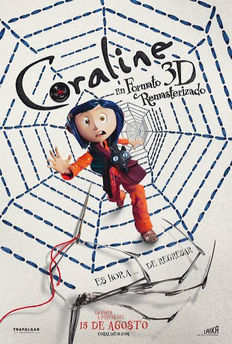

Legado de Coraline: consolidó a Laika Studios.
| Aspecto | Ejemplo | Influencia |
|---|---|---|
| Estilo visual | Mundo alterno con botones | Icono del terror infantil |
| Narrativa | Coraline vs. Otra Madre | Metáfora de valentía |
| Cultura | Fanarts y cosplay | Expansión en comunidades online |
| Premios | Nominación al Óscar | Reconocimiento mundial |
